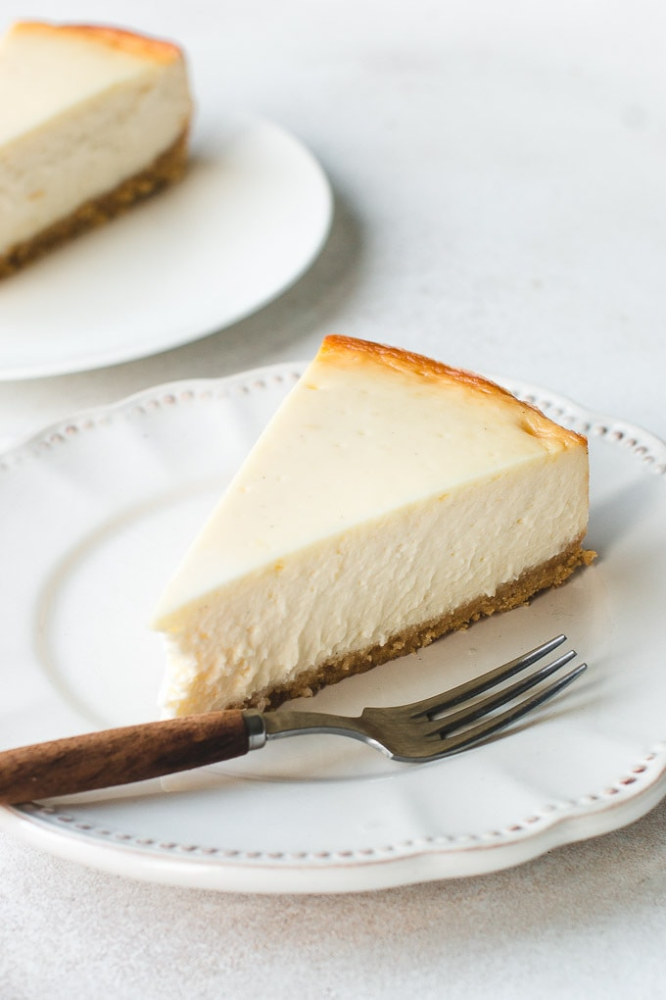

New York Style Cheesecake

- Prep time 40 minutes
- Cooking time 55 minutes
- Additional time 6 hours
- Serves 12
Ingredients
For the base:
- 1 1/2 cups of graham cracker crumbs
- 1/4 cup white sugar
- 1/3 cup melted butter
For the main part of the cheesecake:
- 3 (8 ounce) packages of cream cheese, room temperature
- 4 eggs
- 1 tbsp vanilla extract
- 1 cup white sugar
- 1 tspn cream of tartar
For the topping:
- 1 pint sour cream
- 1 tspn vanilla extract
- 1/2 cup white sugar
Instructions
- Preheat oven to 350 degrees F.
- To make the base, mix together cracker crumbs, sugar and butter in a bowl until evenly moistened. Press into the bottom and 1/2 inch up the sides of a 9-inch springform pan.
- For the filling, mix the cream cheese and sugar with an electric mixer in a large bowl until smooth. Blend in the eggs, vanilla and cream of tartar and pour over the pie crust.
- Bake in preheated oven until the center is set, around 50 minutes. Allow to cool on counter for 5 minutes.
- For the topping, mix together the sour cream, vanilla and sugar in a bowl until smooth. Pour over the cheesecake, starting from the sides of the pan and working your way to the center.
- Return to the oven for a further 5 minutes. Allow to cool to room temperature in the pan, and refridgerate for at least 6 hours before serving.
back